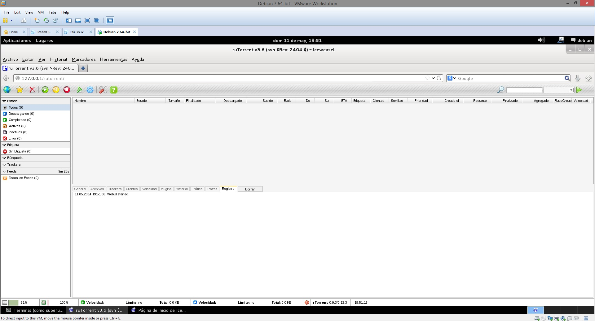
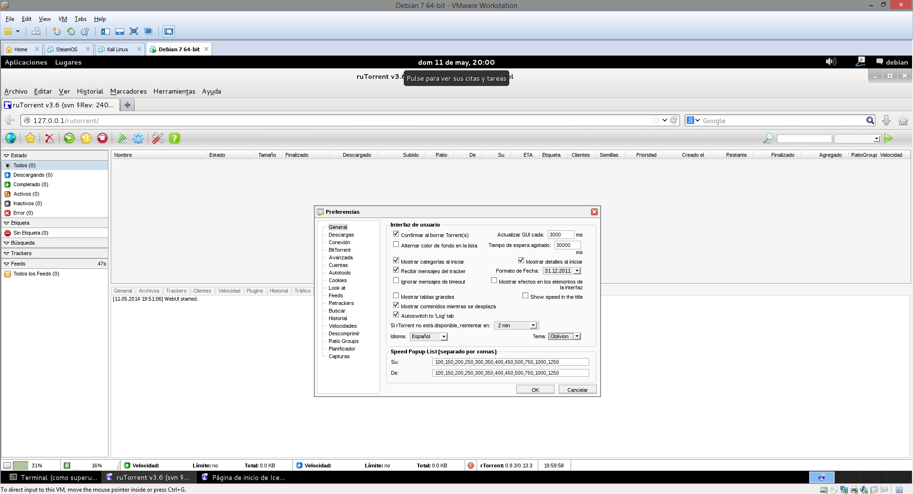
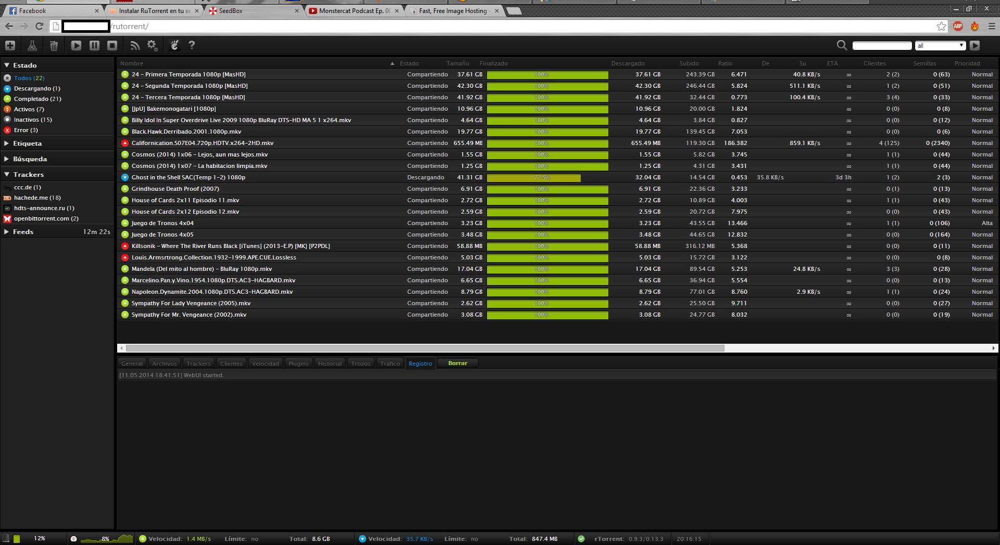
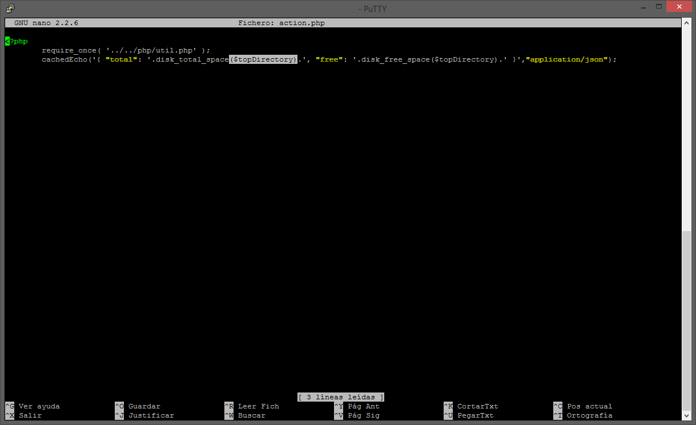
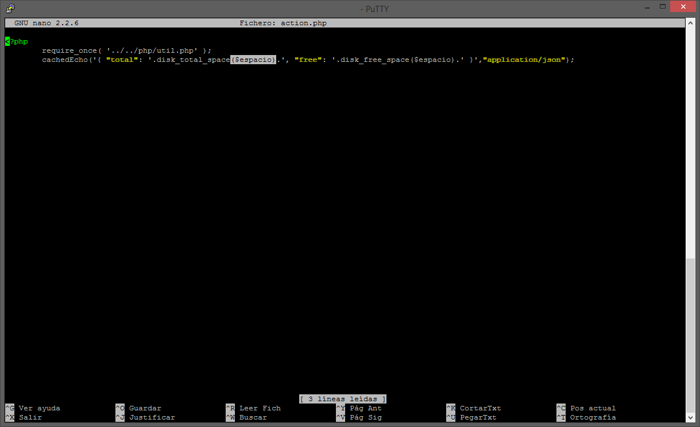

Instalación de rtorrent con Rutorrent
Para empezar voy a explicar de que se trata este tutorial y que se va a instalar. Se trata de instalar rtorrent como cliente torrent en Debian que también funciona en Raspbian ya que esta basada en él, y Rutorrent como servidor web y poder manejar dicho cliente desde el navegador, ya que rtorrent no dispone de interfaz gráfica. Tardará bastante en instalarse en la Raspberry Pi. Bien dicho esto que se necesita instalar:
- XMLRPC
- libtorrent
- rtorrent
- rutorrent Web UI & plugins
- apache
- PHP
Nota: Para instalar y configurar todo hay que hacerlo como root o tener permisos momentaneos de root con la palabra sudo delante, si no no funciona. La ventaja de instalarlo manualmente y no mediante Scripts es que se puede instalar las últimas versiones, se aprende más y se tiene el control de lo que se instala.
# apt-get update # apt-get install subversion build-essential automake libtool libcppunit-dev libcurl3-dev libsigc++-2.0-dev unzip unrar-free curl libncurses-dev # apt-get install apache2 php5 php5-cli php5-curl
Activación scgi para apache2
# apt-get install libapache2-mod-scgi # a2enmod scgi
Instalación screen
# apt-get install screen
XMLRPC
Para tenerlo todo organizado se crea una carpeta que voy a llamar install y se meterá todos los paquetes dentro, para poder localizarlos más fácilmente.
# mkdir install # cd install
Ahora con subversion, pillamos el último paquete de XMLRPC.
# svn checkout http://svn.code.sf.net/p/xlmrpc-c/code/trunk xlmrpc-c-code # cd xlmrpc-c-code/ # ./configure --disable-cplusplus # make # make install
Instalació de rtorrent
libtorrent
Se descarga la última versión de libtorrent que se encuentra en http://libtorrent.rakshasa.no/
# cd .. # wget http://libtorrent.rakshasa.no/downloads/libtorrent-0.13.4.tar.gz # tar -xvzf libtorrent-0.13.4.tar.gz # cd libtorrent-0.13.4 # ./autogen.sh # ./configure # make # make install
rtorrent
# cd .. # wget http://libtorrent.rakshasa.no/downloads/rtorrent-0.9.4.tar.gz # tar -xvzf rtorrent-0.9.4.tar.gz # cd rtorrent-0.9.4.tar.gz # ./autogen.sh # ./configure --with-xmlrpc-c # make # make install # ldconfig
rtorrent user
Ahora creamos un usuario que usará rtorrent, en este caso le voy a llamar seed pero le poéis llamar como se quiera, solo se debe modificar todo lo que lleve la palabra seed.
# cd .. # useradd seed # passwd seed
Ahora editamos el archivo /etc/passwd por si se quiere editar la consola y directorio del usuario creado. En vez de /bin/sh será /bin/bash. No es obligatorio hacerlo.
# nano /etc/passwd seed:x:1001:1001::/home/seed:/bin/bash
Ahora creamos las carpetas que necesita correr rtorrent.
Nota: podéis cambiar los nombres de las carpetas y la ruta solo recordar cambiarlas más adelante donde se hace referencia, yo voy a poner la ruta de un disco externo, ya que se instala en la Raspberry Pi.
# mkdir /home/seed # mkdir /media/HDD1/rtorrent/download # mkdir /media/HDD1/rtorrent/.session # mkdir /media/HDD1/rtorrent/watch # mkdir /media/HDD1/rtorrent/temp # chown -R seed.seed /home/seed # chown -R seed.seed /media/HDD1/rtorrent # chmod 755 /media/HDD1/rtorrent
Lo que he hecho es crear varias carpetas en el disco externo, poner permisos y cambiar el propietario de las carpetas al usuario seed, he creado una carpeta llama seed ya que servirá más adelante. Dichas carpetas significan:
- .session→ Aquí correrá la sesion de los torrents.
- download→ Aquí van las descargas de los torrents finalizados.
- watch→ Todos los torrents que se añadan aquí empezarán automáticamente.
- temp→ Es la carpeta temporal de rtorrent.
configuración de rtorrent
Ahora toca configurar el rtorrent, hay que poner el archivo a continuación de configuración en la CARPETA HOME.
# nano /home/seed/.rtorrent.rc
Nota: si no arranca bien es que se quiere ejecutar con otro usuario o root, por lo tanto hay que copiarlo aquí
# nano ~/.rtorrent.rc
Para comprobar si arranca rtorrent bien o no basta con escribir en la terminal rtorrent
y saldría lo siguiente:

Se copia este contenido en el archivo, el archivo esta pensado para tracker privado si se quiere para público hay que habilitar DHT y peer_exchange. Así que modificar lo que necesitéis rutas y puertos incluidos.
# This is an example resource file for seeder1rent. Copy to
# ~/.seeder1rent.rc and enable/modify the options as needed. Remember to
# uncomment the options you wish to enable.
#
# Based on original .seeder1rent.rc file from http://libtorrent.rakshasa.no/
# Modified by Lemonberry for rtGui http://rtgui.googlecode.com/
#
# This assumes the following directory structure:
#
# /Torrents/Downloading - temporaray location for torrents while downloading (see "directory")
# /Torrents/Complete - Torrents are moved here when complete (see "on_finished")
# /Torrents/TorrentFiles/Auto - The 'autoload' directory for seeder1rent to use. Place a file
# in here, and seeder1rent loads it #automatically. (see "schedule = watch_directory")
# /Torrents/Downloading/seeder1rent.session - for storing seeder1rent session information
#
# Maximum and minimum number of peers to connect to per torrent.
# min_peers = 40
# max_peers = 250
# Same as above but for seeding completed torrents (-1 = same as downloading)
min_peers_seed = -1
max_peers_seed = -1
# Maximum number of simultanious uploads per torrent.
max_uploads = 100
# Global upload and download rate in KiB. "0" for unlimited.
download_rate = 0
upload_rate = 0
# Default directory to save the downloaded torrents.
directory = /media/HDD1/rtorrent/downloads
# Default session directory. Make sure you don't run multiple instance
# of seeder1rent using the same session directory. Perhaps using a
# relative path?
session = /media/HDD1/rtorrent/.session
# Watch a directory for new torrents, and stop those that have been
# deleted.
schedule = watch_directory,5,5,load_start=/media/HDD1/rtorrent/watch/*.torrent
schedule = untied_directory,5,5,stop_untied=
# Close torrents when diskspace is low. */
schedule = low_diskspace,5,60,close_low_diskspace=100M
# Stop torrents when reaching upload ratio in percent,
# when also reaching total upload in bytes, or when
# reaching final upload ratio in percent.
# example: stop at ratio 2.0 with at least 200 MB uploaded, or else ratio 20.0
# schedule = ratio,60,60,stop_on_ratio=200,200M,2000
# When the torrent finishes, it executes "mv -n <base_path> ~/Download/"
and then sets the destination directory to "~/Download/". (0.7.7+)
# on_finished = move_complete,"execute=mv,-u,$d.get_base_path=,/home/seeder1/download/complete/ ;d.set_directory=/home/seeder1/download/complete/"
# The ip address reported to the tracker.
# ip = 127.0.0.1
# ip = rakshasa.no
# The ip address the listening socket and outgoing connections is
# bound to
# bind = 127.0.0.1
# bind = rakshasa.no
# Port range to use for listening.
port_range = 55995-56000
# Start opening ports at a random position within the port range.
# port_random = yes
scgi_port = 127.0.0.1:5000
# Check hash for finished torrents. Might be usefull until the bug is
# fixed that causes lack of diskspace not to be properly reported.
#check_hash = no
# Set whetever the client should try to connect to UDP trackers.
# use_udp_trackers = no
# Alternative calls to bind and ip that should handle dynamic ip's.
# schedule = ip_tick,0,1800,ip=rakshasa
# schedule = bind_tick,0,1800,bind=rakshasa
# Encryption options, set to none (default) or any combination of the following:
# allow_incoming, try_outgoing, require, require_RC4, enable_retry, prefer_plaintext
#
# The example value allows incoming encrypted connections, starts unencrypted
# outgoing connections but retries with encryption if they fail, preferring
# plaintext to RC4 encryption after the encrypted handshake
#
encryption = allow_incoming,enable_retry,prefer_plaintext
# Enable DHT support for trackerless torrents or when all trackers are down.
# May be set to "disable" (completely disable DHT), "off" (do not start DHT),
# "auto" (start and stop DHT as needed), or "on" (start DHT immediately).
# The default is "off". For DHT to work, a session directory must be defined.
#
dht = disable
# UDP port to use for DHT.
#
# dht_port = 6881
# Enable peer exchange (for torrents not marked private)
#
peer_exchange = no
#
# Do not modify the following parameters unless you know what you're doing.
#
# Hash read-ahead controls how many MB to request the kernel to read
# ahead. If the value is too low the disk may not be fully utilized,
# while if too high the kernel might not be able to keep the read
# pages in memory thus end up trashing.
# hash_read_ahead = 10
# Interval between attempts to check the hash, in milliseconds.
# hash_interval = 100
# Number of attempts to check the hash while using the mincore status,
# before forcing. Overworked systems might need lower values to get a
# decent hash checking rate.
# hash_max_tries = 10
# Max number of files to keep open simultaniously.
# max_open_files = 128
# Number of sockets to simultaneously keep open.
# max_open_sockets = <no default>
# Example of scheduling commands: Switch between two ip's every 5
# seconds.
# schedule = "ip_tick1,5,10,ip=torretta"
# schedule = "ip_tick2,10,10,ip=lampedusa"
# Remove a scheduled event.
# schedule_remove = "ip_tick1"
Ahora hay que darle permisos y cambiar el propietario.
# chown -R seed.seed /home/seed/.rtorrent.rc # chmod 755 /home/seed/.rtorrent.rc
Nota: también se deberá aplicar los permisos si se ha puesto en la ruta ~/.rtorrent.rc
# chown -R seed.seed ~/.rtorrent.rc # chmod 755 ~/.rtorrent.rc
Auto-start
Esto servirá para que arranque todo automáticamente, tan solo encender la Raspberry Pi. Creamos una entrada en la ruta /etc/init.d/rtorrent con el siguiente texto:
# nano /etc/init.d/rtorrent
# !/bin/sh
user="seed"
# the system group to run as, not implemented, see d_start for beginning implementation
# group=`id -ng "$user"`
# the full path to the filename where you store your rtorrent configuration
config="`su -c 'echo $HOME' $user`/.rtorrent.rc"
# set of options to run with
options=""
# default directory for screen, needs to be an absolute path
base="`su -c 'echo $HOME' $user`"
# name of screen session
srnname="rtorrent"
# file to log to (makes for easier debugging if something goes wrong)
logfile="/var/log/rtorrentInit.log"
#######################
###END CONFIGURATION###
#######################
PATH=/usr/bin:/usr/local/bin:/usr/local/sbin:/sbin:/bin:/usr/sbin
DESC="rtorrent"
NAME=rtorrent
DAEMON=$NAME
SCRIPTNAME=/etc/init.d/$NAME
checkcnfg() {
exists=0
for i in `echo "$PATH" | tr ':' '\n'` ; do
if [ -f $i/$NAME ] ; then
exists=1
break
fi
done
if [ $exists -eq 0 ] ; then
echo "cannot find rtorrent binary in PATH $PATH" | tee -a "$logfile" >&2
exit 3
fi
if ! [ -r "${config}" ] ; then
echo "cannot find readable config ${config}. check that it is there and permissions are appropriate" | tee -a "$logfile" >&2
exit 3
fi
session=`getsession "$config"`
if ! [ -d "${session}" ] ; then
echo "cannot find readable session directory ${session} from config ${config}. check permissions" | tee -a "$logfile" >&2
exit 3
fi
}
d_start() {
[ -d "${base}" ] && cd "${base}"
stty stop undef && stty start undef
su -c "screen -ls | grep -sq "\.${srnname}[[:space:]]" " ${user} || su -c "screen -dm -S ${srnname} 2>&1 1>/dev/null" ${user} | tee -a "$logfile" >&2
# this works for the screen command, but starting rtorrent below adopts screen session gid
# even if it is not the screen session we started (e.g. running under an undesirable gid
# su -c "screen -ls | grep -sq "\.${srnname}[[:space:]]" " ${user} || su -c "sg \"$group\" -c \"screen -fn -dm -S ${srnname} 2>&1 1>/dev/null\"" ${user} | tee -a "$logfile" >&2
su -c "screen -S "${srnname}" -fa -d -m rtorrent 2>&1 1>/dev/null" ${user} | tee -a "$logfile" >&2
}
d_stop() {
session=`getsession "$config"`
if ! [ -s ${session}/rtorrent.lock ] ; then
return
fi
pid=`cat ${session}/rtorrent.lock | awk -F: '{print($2)}' | sed "s/[^0-9]//g"`
if ps -A | grep -sq ${pid}.*rtorrent ; then # make sure the pid doesn't belong to another process
kill -s INT ${pid}
fi
}
getsession() {
session=`cat "$1" | grep "^[[:space:]]*session[[:space:]]*=" | sed "s/^[[:space:]]*session[[:space:]]*=[[:space:]]*//" `
echo $session
}
checkcnfg
case "$1" in
start)
echo -n "Starting $DESC: $NAME"
d_start
echo "."
;;
stop)
echo -n "Stopping $DESC: $NAME"
d_stop
echo "."
;;
restart|force-reload)
echo -n "Restarting $DESC: $NAME"
d_stop
sleep 1
d_start
echo "."
;;
*)
echo "Usage: $SCRIPTNAME {start|stop|restart|force-reload}" >&2
exit 1
;;
esac
exit 0
Ahora le damos permisos al archivo creado.
# chmod 755 /etc/init.d/rtorrent
Ahora se refresca el sistema.
# update-rc.d rtorrent defaults
Ahora se crean los logs.
# nano /var/log/rtorrentInit.log # chown seed.seed /var/rtorrentInit.log
Nota: guardarlo vacío puesto que no hay que poner nada dentro.
Instalación de Rutorrent
Volvemos a la carpeta install por si no estabamos antes. Y descargamos el Rutorrent.
# cd /install # wget http://dl.bintray.com/novik65/generic/rutorrent-3.6.tar.gz # tar -xvzf rutorrent-3.6.tar.gz # mv rutorrent /var/www
Ahora los plugins.
# wget http://dl.bintray.com/novik65/generic/plugins-3.6.tar.gz # tar -xvzf plugins-3.6.tar.gz # cp -R plugins /var/www/rutorrent/
Nos cargamos el plugin darkpal.
# rm -rf /var/www/rutorrent/plugins/darkpal
Le damos los permisos.
# chown -R www-data:www-data /var/www/rutorrent
Se instala las dependencias de los plugins mediainfo y ffmpeg.
# apt-get install mediainfo # apt-get install ffmpeg
Dar seguridad a Rutorrent
Ahora vamos a darle seguridad a la WebUI.
# a2enmod ssl # a2enmod auth_digest # a2enmod scgi # openssl req $@ -new -x509 -days 365 -nodes -out /etc/apache2/apache.pem -keyout /etc/apache2/apache.pem # chmod 600 /etc/apache2/apache.pem # htdigest -c /etc/apache2/passwords seedbox seed
Nota: Poner la contraseña que se quiera, (es la que servirá para acceder al Rutorrent)
# cd /etc/apache2/sites-available/ # rm -rf default
Ahora copiamos este contenido dentro.
# nano /etc/apache2/sites-available/default
<VirtualHost *:80>
ServerAdmin webmaster@localhost
DocumentRoot /var/www/
<Directory />
Options FollowSymLinks
AllowOverride None
</Directory>
#<Directory /var/www/>
#Options Indexes FollowSymLinks MultiViews
#AllowOverride None
#Order allow,deny
#allow from all
#</Directory>
ScriptAlias /cgi-bin/ /usr/lib/cgi-bin/
<Directory "/usr/lib/cgi-bin">
AllowOverride None
Options +ExecCGI -MultiViews +SymLinksIfOwnerMatch
Order allow,deny
Allow from all
</Directory>
ErrorLog /var/log/apache2/error.log
# Possible values include: debug, info, notice, warn, error, crit,
# alert, emerg.
LogLevel warn
CustomLog /var/log/apache2/access.log combined
Alias /doc/ "/usr/share/doc/"
<Directory "/usr/share/doc/">
Options Indexes MultiViews FollowSymLinks
AllowOverride None
Order deny,allow
Deny from all
Allow from 127.0.0.0/255.0.0.0 ::1/128
</Directory>
<Location /rutorrent>
AuthType Digest
AuthName "seedbox"
AuthDigestDomain /var/www/rutorrent/ http://127.0.0.1/rutorrent
AuthDigestProvider file
AuthUserFile /etc/apache2/passwords
Require valid-user
SetEnv R_ENV "/var/www/rutorrent"
</Location>
</VirtualHost>
Ahora se edita este otro archivo y se añade al final del documento.
# nano /etc/apache2/apache2.conf
# ServerName
ServerName localhost

Ya falta menos. Continuamos
# a2ensite default-ssl # /etc/init.d/apache2 reload # /etc/init.d/rtorrent start Starting rtorrent: rtorrent.
Listo ya se puede acceder desde el navegador poniendo la IP privada de la Raspberry Pi/rutorrent/ es decir sería http://XXX.XXX.X.X/rutorrent/ 
Opcional modificar Rutorrent
Esta parte es totalmente extra y no hace falta hacerla, pero os voy a enseñar como modificar el Rutorrent.
Cambiar favicon
Es tan simple como cambiar uno por otro teniendo el mismo nombre favicon.ico, pero antes guardar una copia a modo de backup el original.
# mv /var/www/rutorrent/favicon.ico /var/www/rutorrent/favicon.ico.backup
Bajáis el que queráis yo recomiendo esta web tiene muchos. Después solo mover el nuevo favicon con el nombre favicon.ico a la ruta:
# mv /var/www/rutorrent
Cambiar skin
Solo hay que ir a las Preferencias del Rutorrent y en Tema se selecciona el que se quiera. 
Cambiar el título
Suena difícil pero no lo es tanto hay que editar el siguiente archivo:
# nano /var/www/rutorrent/js/webui.js
Pulsamos las teclas control + w y ponemos ruTorrent y editamos donde pone:
newTitle+="ruTorrent v"+self.version;
lo cambiamos a por ejemplo:
newTitle+="Seedbox"+;
Así queda el resultado: 
Nueva variable para plugin Diskspace
El plugin diskspace de la WebUI de Rutorrent toma como referencia la primera particón es decir en / y eso no es lo que queremos ya que las descargas van a un disco externo de modo que vamos a crear una variable para indicarle el nuevo sitio a donde tiene que mirar. Nos dirigimos a donde los plugins van a buscar las variables que :
# nano /var/www/rutorrent/conf/config.php
Ahora exactamente en el mismo sitio donde yo lo hago se añade una nueva línea y ponemos la variable bien tabulada.
$espacio = '/media/HDD1'; // Variable para el plugin de diskspace

Una vez creada la variable espacio, se procede a cambiar el plugin diskspace que esta localizado en:
# nano /var/www/rutorrent/plugins/diskspace/action.php
Y cambiamos la variable $topdirectory, por $espacio  
se guarda y se reinicia el apache.
# /etc/init.d/apache2 restart
Eso es todo amigos, largo un poco complejo pero con apto resultado. Nota: recordar abrir los puertos del servidor web que es el 80 y del rtorrent. Importante: Rutorrent tiene la capacidad de añadir torrents por RSS de modo que si se tiene activado en la Raspberry Pi puede suponer un problema ya que sobrecargaría el sistema y dejará de funcionar, de modo que no lo recomiendo.